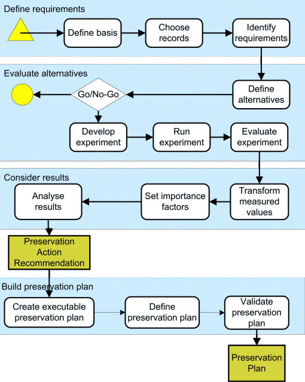

An overview of the four-phase Planets Preservation Planning workflow
is presented in Figure 1.

Figure 1: Overview of Planets Preservation Planning workflow
The 4-phase process consists of 14 steps. It starts with defining the preservation scenario, choosing sample records for experiments, and identifying the requirements and goals.
The second part of the process consists of the definition and evaluation of potential preservation alternatives. Alternatives are therefore identified, including technical settings and required resources for running the experiments. The Go/No-Go-Decision enforces a review of the work in the previous steps. In the experiments the preservation alternatives are applied to the sample records. The final step of the second phase is the evaluation of the experimental outcomes against the requirements and goals defined in the first phase.
In the third phase results of the experiments are aggregated to make them comparable, importance factors are set and the alternatives are ranked. The stability of the final ranking is analysed with respect to minor changes in the weighting and performance of the individual objectives using Sensitivity Analysis. After this consideration a clear and accountable recommendation can be made for one of the alternatives.
In the fourth and final phase of the planning workflow a preservation plan based on the decision for a preservation action is created. It specifies a series of steps or actions along with organisational responsibilities, rules and conditions for executing the preservation action on the collection.
The workflow shown in Figure 1 is described below in detail.
In the first step, the preservation scenario is described in a semi-structured way including the collection to be considered. Information about the collection includes details about the objects, number of objects in the collection, and legal requirements for handling the records. Moreover, the environment is described in which the preservation process takes place including institutional policies for preservation.
In this step, a representative sample of records from the collection. The samples, usually between 5 and 10 objects, are later used on for evaluating the preservation alternatives.
The goal of this step is to define clearly the requirements and goals (objectives) for a preservation solution in a given domain. High-level goals are specified, collect detailed requirements, and organise them into a tree structure, referred to as the tree of objectives or shortly, ‘objective tree‘.
While the resulting trees usually differ according to specific preservation context, some general principles can be observed. At the top level, the objectives can usually be organised into four main categories:
The objective tree is usually created in a workshop with experts from different domains contributing to the requirements gathering process. The tree is independent from the preservation actions that are considered. It models the requirements, not the actions to be taken. The tree documents the individual preservation requirements of an institution for a given collection of objects. Typical trees may contain from 50 up to several hundred objectives, usually organised in four to six hierarchy levels.
Objective trees were initially created with post-it notes on a flip chart. Figure 3 shows an objective tree constructed with post-it notes.
While this is convenient for certain environments, an alternative way has been introduced and the feedback on it has been very positive. This involves the use of mind-mapping software, usually projected onto a large screen to provide an overview, to allow multiple stakeholders working on the tree.
Figure 4 shows a screenshot of an objective tree using mind-mapping software, which was edited during a preservation planning workshop.
Having defined the objectives, the next step is to assign measures to each of the objectives in the tree, which provides metrics to determine how successful a requirement is met. Wherever possible, the metrics should be objectively quantifiable (e.g. € per year, frames per second). In some cases, (semi-) subjective scales are necessary, for example degrees of openness and stability, support of a standard, degree of file format acceptance within different communities.
Different preservation strategies, using for example migrations tools or emulators, are selected. A detailed description of each preservation alternative is provided. The description includes the software environment and parameters settings of the tool, in order to ensure a clear understanding of the alternative and allow a later re-evaluation of the planning process. For each defined alternative, the amount of work, time, and money required for running experiments is estimated.
Some experiments need a considerable amount of effort and required resources to run the experiments, for example experiment with great number of alternatives or high cost of hardware and software to run the experiments. Feasibility of the proposed alternatives are determined in this step by considering the defined requirements, the selected preservation alternatives, and estimated resources. The result is a decision for continuing the evaluation process or a justification of the abandonment or postponement of certain alternatives.
In the experiments, the preservation alternatives are applied to the previous defined sample records. The results of the experiments are later evaluated against the goals and requirements of the objective tree. In order to run repeatable tests, it is important to document all relevant experiment settings. This stage produces a specific development plan for each experiment, which includes the workflow, the software and hardware systems used for the experiments, and the mechanisms to capture the results. All items needed for the experiment will be developed and/or installed and tested, including copies of the sample objects, software packages and programs, and mechanisms for capturing the results.
Experiments are designed to test one or more aspects of a specific preservation alternative when applied to the previously defined sample records. Running an experiment produces results, for example converted computer files, revised metadata, and measured workload of the hardware. The results are evaluated in the next step.
The results of the experiments are evaluated to determine the degree to which the requirements defined in the objective tree were met. Therefore, the leaf objectives defined in the objective tree are evaluated with the defined measurement unit. For each alternative, the outcomes of this stage are measured performance values for each leaf in the objective tree.
The measurements taken in the experiments might all be measured on different scales. In order to make these comparable, they are transformed to a uniform scale using transformation functions. These transformation functions can define thresholds or injective mathematic functions to map the measured values to the uniform scale. The resulting scale ranges from zero to five. A value of zero denotes an unacceptable result and thus serves as a dropout criterion for the whole preservation alternative.
Not all of the identified objectives are equally important and different degrees of conformance of a solution are accepted in different objectives. This step assigns importance factors to each objective depending on the specific preferences and requirements in the scenario.
In this step, the performance measures for the individual objectives are aggregated to one single comparable value for each alternative. Currently the following methods are available:
We thus obtain aggregated performance values for every part of the objective tree for each alternative, including an overall performance value at the root level.
A first ranking of the alternatives can be done based on the final root values associated with each alternative. This ranking is based on the specific requirements of the preservation context. It forms the basis for a documented and accountable selection of a specific preservation alternative. Furthermore, an analysis of all parts of the objective tree can identify the strengths and weakness of an alternative.
In addition to ranking, Sensitivity Analysis may be performed by analysing, for example, the stability of the ranking with respect to minor changes in the weighting of the individual objectives, or to minor changes in the performance. This will result in a stability value for each alternative and each objective, which may further influence the final decision.
This step of the workflow defines the triggers for the execution and under what conditions the preservation action will be carried out. Hard- and software requirements as well as dependencies to other systems are documented. For execution of the preservation plan tool settings and details about the location of the collection on which the action is to be performed are defined.
To quality assure the performed actions a subset of the criteria used for evaluating solutions can be selected. These criteria will then be extracted by using characterization services on the objects after the performed action and testing, if defined thresholds of these criteria are met. The necessary documentation that has to be recorded for performing the action is also defined in this step.
While most parts of the preservation planning workflow take care of the technical aspects of the preservation plan, this step mainly defines the organisational details.
Cost factors influence the decision on a specific alternative. In this step a more detailed calculation of costs using an approved cost model is performed. Cost models that can be used are for example Life2 or the Total Cost of Ownership (TCO) model. While an estimate of the costs may be fine for evaluating the alternatives, the costs have to be determined as accurate as possible in this step.
The assignments of responsibilities is also documented in this step. Monitoring the process of applying the preservation actions has to be done by a different role than executing the preservation plan. It also has to be monitored if an event occurs that makes it necessary to reevaluate the plan. Possible triggers for this are either a scheduled periodic review, changes in environment such as new available tools detected through technology watch, changed objectives (changed target community requirements) or a changed collection profile (e.g. new objects in the collection). Another possible trigger is that certain tresholds on the evaluation are no longer met by applying the preservation action.
In the final stage the whole documentation about the preservation plan has to be reviewed. The process of evaluating different alternatives and taking a decision for a recommended tool based on the evaluation and the creation of the preservation action plan, the documentation about the basic framework of the institution and parameters under which the plan is valid are verified again.
Tests on a defined set of sample objects are performed in this step to check the validity of the preservation plan and the preservation action plan.
Finally the validated plan has to be approved by the person responsible for approval. Once the plan is approved, no more changes on the plan should be done without revising the whole plan.
The result of the preservation planning process described above is a complete preservation plan. It consists of a concise, objective, and well-documented ranked list of preservation alternatives for a given preservation context, considering institution-specific requirements. By providing both overall and detailed performance measures, based on the standardised and repeatable experiments, it allows the selection of most suitable preservation strategy. Based on this selection a complete preservation plan for performing the preservation action can be defined.